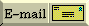

STL ("Standard Templates Library") is a library that consists mainly of (very efficient) container classes, along with some iterators and algorithms to work with the contents of these containers.
Technically speaking the term "STL" is no longer meaningful since the classes provided by the STL have been fully integrated into the standard library, along with other standard classes like ostream, etc. Nonetheless many people still refer to the STL as if it was a separate thing, so you might as well get used to hearing that term.
[ Top | Bottom | Previous section | Next section ]
Since the classes that were part of the STL have become part of the standard library, your compiler should provide these classes. If your compiler doesn't include these standard classes, either get an updated version of your compiler or download a copy of the STL classes from one of the following:
STL hacks for GCC-2.6.3 are part of the GNU libg++ package 2.6.2.1 or later (and they may be in an earlier version as well). Thanks to Mike Lindner.
[ Top | Bottom | Previous section | Next section ]
STL functions such as std::find_if() help you find a T element in a container of T's. But if you have a container of pointers such as vector<Fred*>, these functions will enable you to find an element that matches a given Fred* pointer, but they don't let you find an element that matches a given Fred object.
The solution is to use an optional parameter that specifies the "match" function. The following class template lets you compare the objects on the other end of the dereferenced pointers.
template<class T>
class DereferencedEqual {
public:
DereferencedEqual(const T* p) : p_(p) { }
bool operator() (const T* p2) const { return *p_ == *p2; }
private:
const T* p_;
};
Now you can use this template to find an appropriate Fred object:
void userCode(vector<Fred*> v, const Fred& match)
{
find_if(v.begin(), v.end(), DereferencedEqual<Fred>(&match));
// ...
}
[ Top | Bottom | Previous section | Next section ]
The STL FAQ: ftp://butler.hpl.hp.com/stl/stl.faq
Kenny Zalewski's STL guide: www.cs.rpi.edu/projects/STL/htdocs/stl.html
Dave Musser's STL guide: www.cs.rpi.edu/~musser/stl.html
Mumit's STL Newbie's guide: www.xraylith.wisc.edu/~khan/software/stl/STL.newbie.html
[ Top | Bottom | Previous section | Next section ]
You can make the pointer cast "safe" by using dynamic_cast, but this dynamic testing is just that: dynamic. This coding style is the essence of dynamic typing in C++. You call a function that says "convert this Object into an Apple or give me NULL if its not an Apple," and you've got dynamic typing: you don't know what will happen until run-time.
When you use templates to implement your containers, the C++ compiler can statically validate 90+% of an application's typing information (the figure "90+%" is apocryphal; some claim they always get 100%, those who need persistence get something less than 100% static type checking). The point is: C++ gets genericity from templates, not from inheritance.
[ Top | Bottom | Previous section | Next section ]
NIHCL stands for "National-Institute-of-Health's-class-library." It can be acquired via ftp://128.231.128.7/pub/NIHCL/nihcl-3.0.tar.Z
NIHCL (some people pronounce it "N-I-H-C-L," others pronounce it like "nickel") is a C++ translation of the Smalltalk class library. There are some ways where NIHCL's use of dynamic typing helps (e.g., persistent objects). There are also places where its use of dynamic typing creates tension with the static typing of the C++ language.
[ Top | Bottom | Previous section | Next section ]
This software is sold and therefore it would be illegal to provide it on the net. However, it's only about $30.
[ Top | Bottom | Previous section | Next section ]
Many people are surprised by how big executables are, especially if the source code is trivial. For example, a simple "hello world" program can generate an executable that is larger than most people expect (40+K bytes).
One reason executables can be large is that portions of the C++ runtime library gets linked with your program. How much gets linked in depends on how much of it you are using, and on how the implementer split up the library into pieces. For example, the <iostream.h> library is quite large, and consists of numerous classes and virtual functions. Using any part of it might pull in nearly all of the <iostream.h> code as a result of the interdependencies.
You might be able to make your program smaller by using a dynamically-linked version of the library instead of the static version.
You have to consult your compiler manuals or the vendor's technical support for a more detailed answer.
[ Top | Bottom | Previous section | Next section ]
The C++ Libraries FAQ is maintained by Nikki Locke and is available at www.trumphurst.com/cpplibs1.html
[ Top | Bottom | Previous section | Next section ]
 E-mail the author
[ C++ FAQ Lite
| Table of contents
| Subject index
| About the author
| ©
| Download your own copy ]
Revised Feb 29, 2000